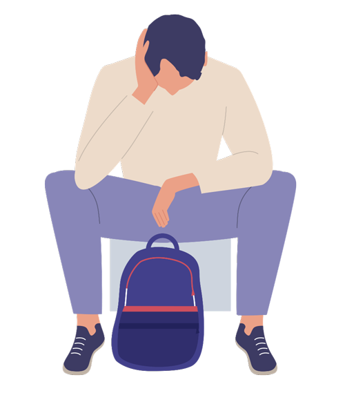
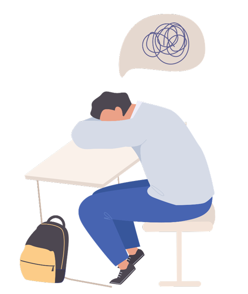
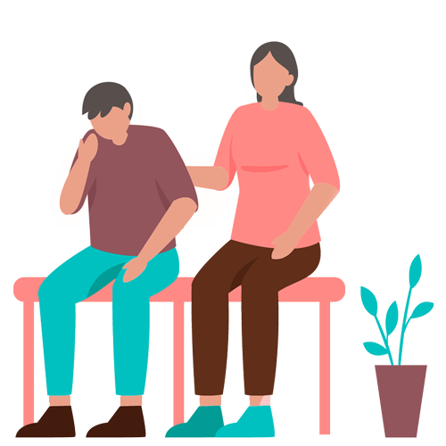
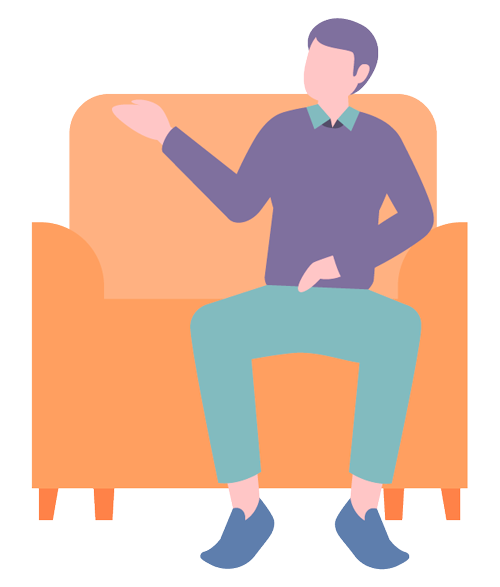

森田療法における薬への接し方
近年、このホームページへ薬を服用される方から問い合わせをいただく機会が増えて来ました。
今回、森田療法の専門医である北西先生から『森田療法における薬への接し方』をまとめていただきました。
是非参考にしていただきますと共に、これを機会に森田療法専門病院機関で薬への接し方について気軽に指導を受けて下さい。
Aさんのパニック障害の症例 患者の症状と治療の経過
Aさんのパニック障害の発症

Aさん（男性 36歳 会社員）
主訴は心悸亢進発作、呼吸困難です。結婚して子供が2人います。34歳時、テレビを見ているときに、急に心臓がぴくっと感じました。
その当時は、Aさんは仕事人間で、仕事が忙しく、家庭のことはほとんど妻にまかせきりでした。また昇進を前にして同じ部署に同期のライバルがいるので頑張らざるを得ない状況でありました。
その後何度か心臓がぴくっとする感じに襲われたAさんは、不安がつのり会社の診療所で心電図—ホルター心電図をとるが、特に問題ないといわれます。
しかし不安を感じたAさんは、ある大学の循環器内科を受診、軽度の狭心症といわれ、血管拡張剤、安定剤が処方されました。
最初の心臓のぴくっとした感じから4ヵ月後、満員電車に乗っていたときに、心臓のぴくっとした感じをいつもよりも強く感じました。それと共に激しい不安に襲われました。そして心悸亢進発作、呼吸困難、手足の震え、腹部の痛み、冷汗などの身体症状を体験すると共に死の恐怖に襲われたのです。救急車で大学病院に入院するが、特に問題がないといわれます。
しかしAさんはまたあの発作が起きたらどうしようと常に不安に駆られるようになりました。
そしてAさんの注意は心臓の動悸や自分の体調に向いてしまいます。するとAさんは些細な身体的変化にも敏感に反応し、それがAさんの激しいパニツク発作を生みます。それがAさんの身体への注意と予期不安を高め、さらにパニック発作を引き起こしやすくなるという悪循環に落ち込んでしまったのです。
このようにして頻回にAさんはパニック発作を起こすようになりました。
そのため電車にまず乗れなくなり、外出ができなくなり、会社にも行けなくなってしまいました。また今や1人で家にいることすらできなくなり、いろいろなことで妻に頼るようになりました。実際妻同伴で職場にやっとの思いでたどり着いても、実際には仕事にならず、すぐに会社の診療所にかけ込んでしまいます。そして結局会社に行けずに休職となります。
Aさんの症例の原因とは？

ここでの不安に対するとらわれに注目してください。わたしたちが不安にとらわれると、このような不安が不安を呼ぶという一種の視野狭窄状態に陥ります。森田療法ではこの打破を治療の目標とします。
Aさんの発症の契機は単なるストレスではありません。Aさんの今までの会社への過剰ともいえる適応の反面、競争にさらされることの不安、また会社で人をまとめていく役割へと変化する人生の節目でAさんの生き方そのものが問われる時期でした。
このようにその人の生き方の行き詰まりとパニック障害の発症はしばしば結びつきます。このような例では慢性化しやすいし、当然のことながら精神療法的配慮がその経過と治り方に決定的な意味を持ちます。
Aさんは急性期のパニック障害のときに、総合病院の神経科やクリニックを訪れています。そして不安神経症あるいはパニック障害といわれ、比較的定型的な治療を受けていました。
パニックを標的とした薬物療法とパニックに対する心理教育が主たるものです。心理教育としてパニック障害の特徴や経過などの説明をAさんは受けています。その場ではある程度納得がいきましたが、パニックそのものもそれに対する予期不安と回避行動もよくならないどころか、次第に悪化していきました。
その当時の担当の主治医は、Aさんが不安や回避行動を訴えるたびに、薬物の種類を変えたり、増量してくれますが一向によくなりません。Aさんはこのままでは、薬漬けの人生になってしまうのではないかと恐れ、薬を服用することに対しても不安と不信を抱くようになりました。
Aさんの薬物療法への試み
Aさんを襲った急性期のパニック発作の治療は定型的におこなわれました。まずパニック発作の医学的説明がなされたのです。それが性格の弱さなどではなく治療を受ける状態であること、発作の最中に心臓が止まったり、死んでしまったり、気が狂ったりすることはないこと、薬物療法の有効性などです。
そしてなるべく回避的にならないようにとの助言もなされています。しかしこれだけではAさんの治療は不十分でした。
このような当時の担当医の治療にもかかわらず、症状は悪化し、その対処手段として担当医ヘ薬物療法の見直しと増量を行い、それに対してAさんはむしろ不安と不信を募らせたのです。クライエントが不安を訴えると、しばしば薬物が増量され、それがまたクライエントの不安を増大するという悪循環が神経症の薬物療法ではみられます。森田療法の不安の理解を治療者も知ってほしいとわたくしは考えています。
新しい治療法（精神療法）の模索

半年後Aさんは精神療法を求め、いろいろと調べていくうちに森田療法のことを知り、外来で治療を受けたいとわたくしのところを受診しました。
Aさんは姉が2人おり、唯一の男の子として母親にかわいがられて育ったそうです。父親は心臓神経症でAさんが中学時代に1年間ほど休職したこともあるといいます。
今までのAさんの人生は順調で、大学を卒業し、就職して、仕事もしっかりとこなしてきました。大学時代に心悸亢進発作に襲われたことがありましたが、自然に治りました。
わたくしはAさんに対して森田療法に基づく初期面接を行いました。Aさんと同伴した奥さんにAさんの陥っている悪循環について説明しました。心臓のぴくっとした感じに不安を起こし、その不安が胸の不快感を強め、それがまた不安を引き起こし、不安発作となることをまず話しました。
それから、そのような不安発作に陥るまいとすると予期不安を起こし、結局は自分で自分の不安を増大していると説明したのです。
薬物療法は不安発作にはある程度有効であるが、それだけではAさんの治療はうまくいかないことをはっきりと伝えました。
そしてAさんの状態は不安が不安を呼ぶ状態になっていること、Aさんの注意は常に不安と自分の体の状態に引きつけられ、その結果さらに不安を鮮明に感じてしまうことを説明します。「これは一種の視野狭窄です」と説明すると「まさにその通りです」とAさんはうなずきます。
その上でAさんに森田療法の治療原理、不安を排除することから受け入れていくこと、不安を逃れる行動から不安とともに建設的な行動を行うこと、を助言します。「今までAさんのやってきたことと正反対のことです。発想の逆転ですよ。そして不安におびえ、不安を取ろうとするだけの今までの人生から、健康的な自分の欲望を見つけ、それを発揮する人生への転換が必要ですね」と説明しました。
これらの説明にAさんは「なるほど、そうなのか」と納得し、また今までと違ってはっきりとした治療の道筋が示されて、自分の不安の克服に取り組む勇気がでてきたようでした。
わたくしはAさんの治療を日記を用いて、外来で始めることにしました。
その日の自分の行ったこと、感じたこと、考えたことを日記に書くことと外来に週に1回1人で通ってくること、不安に襲われたら不安をよく知るチャンスと思い、しっかりとそれと付き合ってみることとその不安を観察してみること、をわたくしは提案しました。
つまり今までのように受け身で服薬をしているだけでなく積極的な精神療法を行うことをAさんに提案したのです。Aさんは外来森田療法を受けることを同意しました。面接は最初だけ週に1回で、すぐに2週間に1度のペースでやっていけるようになりました。
日記療法とは
日記療法
伝統的な森田療法では、臥褥期が終わり、軽作業期から日記療法を始めます。そこでは、主としてその日の行動の記載が求められます。入院者はその日の夕方に日記を記載し、次の日の朝に治療者に提出します。治療者は毎日それについて森田療法の立場からコメントを加えます。
わたくしの日記療法は、伝統的な森田療法のそれとは異なります。わたくしは治療を始めるに当たり、患者に「どんなことであっても、それが症状であっても、不満であっても、怒りであっても、感じたままに書くこと」を勧めます。それはその人がさまざまな感情を中心に、行ったこと、考えたことなどの体験を一日の終わりに振り返り、それを見つめて、主体的に書くことを重視するからです。
日記の治療的意味と効果として
- 悩んでいる人にとって、その日の夕方に日記をつけるということは、その日の出来事を振り返り、みずから内省する契機となります。
- その人自身が主体的に自分の不安、感情を自分なりに受け止めて行こうとする態度を助長します。
- 治療者との日記を通したやりとりは、精神科面接、カウンセリングに匹敵するもので、自己理解を深め、不安などの感情を受け止め、それを消化し、自分のあり方を修正する原動力となります。
- 記録として残るので患者は治療者の日記のコメントを何回となく繰り返して読むことが可能となり、そこから十分時間をかけて自己修正ができます。
森田療法の実践
最初はもちろん、Aさんは不安になるとそれを紛らわし、そして奥さんに依存した行動をとってしまいます。そのことがAさんの自己評価を下げます。
不安発作と予期不安は相変わらず続きましたが、次第に不安発作に直面し、そこで自分がどのような感情的体験をするのかを試みるようになりました。
ある日の面接でAさんから思わぬ提案がありました。「自分で恐怖に直面してみたい」というのです。この閉塞状況を冒険することによって打ち破ってみたいというのです。今までAさんは家に一人でいることが出来ませんでした。そのため奥さんの母親が以前から病気がちで、奥さんは見舞いに行きたい希望がありましたが、それもままならないことでした。そのような事情をAさんは知っていましたが、自分の不安のために快く送り出すことが出来ませんでした。それがまたAさんの自分は駄目だという自信喪失に輪をかけていたのです。
ある日、Aさんはある決心のもとに、奥さんを実家に2日ほど子供と一緒に母親の見舞いに行かせることにしたのです。

Aさんは「この機会に一度、不安のままに漂い、不安がどういうものか観察してやろうと思います。そのためには、できるだけ不安発作がおこってくれたほうがいいというくらいの気持ちです。いままで妻には私のことで苦労をかけましたし・・・」とその決意を私に伝えてくれました。わたくしはAさんの勇気に感動し、「その勇気があなたを治すのです」と伝えました。
さてAさんの不安は奥さんが不在のときにどうなったでしょうか。Aさんが不安発作にかかっていらいほとんど奥さんはAさんにかかりっきりでした。
Aさんの一人暮らしが始まりました。そこでAさんは実に興味深い体験をすることになります。「不安をみてやろう、観察してやろう」と待ち受けるAさんの身に、あれだけおこっていた不安発作がただの一度もおこらなかったのです。
身をもって体験したこの逆説、不安に対する体験的理解は、Aさんをさらに変えることになります。不安というのは逃げようとすればするほど、おこしてはいけないと思えば思うほど、コントロールしようとすればするほど、強まっていくものだとわかったAさんの行動半径は徐々に大きくなっていきました。つまりAさんは「不安から逃げようとするから不安は襲ってくるのだ」と体験的理解をしたのです。
その後、Aさんの行動は積極的になってきました。常に不安に襲われるのですが、それを受けとめ、不安が変化、流動することを体験できるようになりました。次第に不安以外の自然な感情を感じ、それを日記に記載するようになりました。特に家族との感情的な交流が、今までのような不安・恐怖の記載に代わって書かれるようになりました。
そしてAさんは会社に復帰することを自ら決断しました。自分の健康な欲望の発見であり、発揮です。それをわたくしは支持し、その発揮を励ましました。電車に乗ること、人に会うこと、会社で机に向かって仕事をすること、全てが不安でありました。しかしその不安を一つ一つ受けとめ、乗り越えていったのです。次第に仕事をする喜びを感じるようになったが、以前のような仕事人間にはなりたくないようでした。Aさんは不安を克服する過程で、家族との感情的交流の大切さなどを知ったと日記に記載します。服薬も次第に減量し、服薬を止めるとともに、治療も終結となりました。約10ヵ月の治療期間です。
森田療法における薬への接し方＜解説＞
薬物療法と森田療法の不安への理解
森田療法の治療モデルは薬物療法のモデルとは異なることが理解されると思います。薬物の効果は限定的で一時的なものと不安障害のクライエントに伝えられます。その上でクライエントの悪循環を同定し、不安の受容、自分の欲望の再発見と発揮、さらには生き方の修正にまで治療者は踏み込んでいきます。しばしば人生の節目でパニック障害に陥った症例にはこのような治療的接近が必要であるからです。
さて、薬物療法では症状の客観化、あるいは数量化が重要です。森田療法では不安（症状）そのものへの関わり合い、つまりそれへのとわられを重視します。あるいはその「とらわれ」からその人の人格や人生を、つまり「生き方」をみるわけです。
有効な治療対象あるいは時期として、薬物療法では急性期の不安です。そして森田療法では急性期から慢性期にいたるまでの不安であり、そこにまず、不安へのとらわれ（悪循環）とそのひとの人生の危機（その人の生き方の行き詰まり）をみてとるわけです。
治療目標の違いと治療の終わり方
そして治療目標も自ずから異なってきます。薬物療法では症状除去であり、森田療法では症状の受容であります。そして最終的には自己受容ということになります。薬物療法では、症状が軽くなっても、どの時点で、どのように治療を終わりにするのか、というはっきりとした手だてがありません。そのために漠然と薬物が投与され、クライエントの不安が逆に募ります。森田療法では一般に比較的短期の終結を目指し、そのための治療の道筋と到達すべき心理的、行動的目標を具体的に示すことができます。このことが治療での薬物療法の役割を限定し、薬物に対する治療者と患者の依存を防ぐのです。
パニック障害の治療における薬物療法の役割
わたくしは、パニック障害に対する薬物療法の役割を、急性期のパニック発作の苦痛あるいはそこから生じる悪循環の緩和という限定的なものであると考えています。そして何よりもパニック障害に対する精神療法の焦点は、呈示した症例の治療経過が示しているように、パニック発作を形成する悪循環過程、即ちパニック発作そのものに向けられるべきです。それがパニック障害によって引き起こされた、行動障害や社会的機能障害への治療へと結びついていきます。そして森田療法の治療者はこの領域で最も経験を積み、治療的成果を上げています。
森田療法における不安の理解とその受け止め方をめぐって
その具体的治療として、
（1）感情（不安）の特性に関する心理・教育
（2）治療者の悪循環への介入（2つのモデル）が挙げられます。
（1）感情（不安）の特性に関する心理・教育
まず患者に不安の特性を繰り返し伝えることによって、その不安の対処を容易にし、不安に直面化し、それを受けとめていけるように援助します。以下のようなことを伝えていきます。
- 自己の感情に責任はない。しかし自己の行動にはある程度の責任があること
- 感情を単一の原因に帰することはできない。したがってその原因探究の試みは、意味がないこと。それよりも悪循環の打破が重要であること
- 感情の法則（森田）
森田は感情の方則として以下のものを挙げました。
簡略化して述べます。-
感情は、そのままに放任し、あるいは自然発動のままに従えば、その経過は山型の曲線をなし、ついには消失する。
不安などの感情は自然のままに放置できれば、それは流動し、やがて消失する。この感情の流動・変化を体験するためには、感情をめぐる悪循環の打破、恐怖・不安への踏み込み（恐怖突入）が必要である。 - 感情はその感覚に慣れるに従い、その鋭さを失い、次第に感じなくなってくる。
-
感情は、そのままに放任し、あるいは自然発動のままに従えば、その経過は山型の曲線をなし、ついには消失する。
（2）不安に対する態度の変換 —2つの治療モデルに基づいて—
1つは回避行動から健康的な行動、行為への変換です。これを行動体験モデルと呼びます。もう1つは自分の不安、恐怖をしっかりと見つめ、受けとめ、体験することです。これを感情体験モデル（受容モデル）と呼びます。わたくしはこれらのモデルを適宜提示しながら、患者の悪循環を打破し、クライエントの心理的、行動的変化を援助します。
パニック障害のクライエントにはわたくしはまず行動体験モデルを提示する。不安・恐怖を回避し、それを何とか軽減しようとしている人たちに今までと違った行動、行為を提案するのです。原則的には、「まずは症状を持ちながら、現実の必要な行為を行うこと」「その行為を通して何が得られるか、体験すること」を提案する。それには、当然恐怖に直面すること、恐怖そのものへ入り込むことが必要となります。そこで患者には、不安・恐怖が当然起こるものと思い定めること、自分でその感情を操作しようとしないことが助言されます。
つまり不安、恐怖などの苦痛に満ちた感情を排除しないで、それをむしろ自分で感じ取り、付き合うことを助言するのです（感情体験モデル）。さてこのようなモデルに基づいたパニック発作に対する介入が、どのような結果を生んだかは、Aさんをみていただければお分かりだと思います。
現代の神経症の治療と森田療法
最後に森田療法はいうまでもなく、神経症の精神療法です。その対象は、大まかにいってしまえばDSM-IVでいう不安障害とその周辺領域の障害が含まれます。森田はその治療対象を、普通神経質（心気症的不安と身体へのとらわれ）、発作性神経症（今でいうパニック障害と関連領域）、強迫観念症（強迫性障害や恐怖症、特に対人恐怖・社会恐怖）と分けました。しかしその本質的差異は認めず、そこには共通の病理があるとしました。それが森田のいう「とらわれ」です。今回はパニック障害の一例を紹介しました。つまりパニック障害以外にも現在は神経症、つまり不安障害の治療に薬物療法は多く使われるようになりました。しかしここで強調したように、薬だけでは神経症の治療が終わりません。終わりなき薬物療法となってしまう危険性もあります。薬物療法はある時期には神経症の治療に必要です。しかしそれだけでは治りません。不安を受け止めていける心の態度を作り、健康な欲望を発揮すること、つまり今までの生き方を修正することが、治ることへとつながるのです。いたずらに神経質者は薬に対する不安感をつのらせるのではなく、森田療法における薬への接し方を大いに参考にしていただきたいとおもいます。